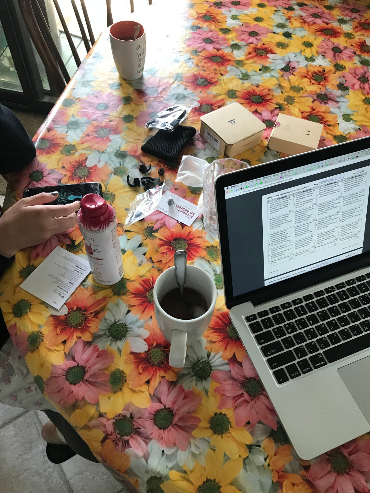

hello world
드뎌 되네요
When you were in school, it was pretty much anything goes. But once you enter the workforce it's a whole new scene, one in which the way you behave, dress, interact with others, and perform your job duties can make or break a career.
Trying to find out what is the culture all about there. How do people dress there so that they don't show up for work that first week dressing as they might have done in college, but rather it's about fitting in.
On the job, in the office, serving customers, the secret to advancing in your career is to know the proper and professional way to conduct yourself in every type of work-related situation. The key to that is learning about and following the unwritten rules of business etiquette.
Respectful, courteous behavior is really just good manners, and in the workplace it's what's known as business etiquette or professionalism. Even if you're not entirely sure of what's the right thing to do or say in every situation, just remember to be respectful, polite, and helpful. And watch others for cues on how to conduct yourself at work.
Ever witness or display bad manners in the workplace? Kristen.
Yeah. So I think bad manners are certainly something that if you bring into the workplace can earn you a reputation pretty quickly, and you'll get looks behind your back. And I think nowadays with technology being so prevalent in your pocket on your phone, with your iPad in meetings, with your laptop computer, people get so sucked into technology that they almost forget about the people that they're working with. And really, that can come across as being bad manners.
I think it's really important to remember to respect people's space. If your office is a three-way to some other part of the office, it can be really annoying if somebody's walking through all the time, or if they just barge into your office and don't ask if you're available. Things like that can be really distracting.
Good business etiquette is not just what you say or do, it can also be what you don't say. And sometimes poor etiquette is being conveyed and observed by others even when you're not aware of it. Some studies indicate that as much as 90% of our communication is non-verbal.
Eye contact may indicate that you or are not listening to the person that is speaking to you. Nodding of the head may indicate or imply that you either agree or disagree. Body language itself, crossing the arms, generally indicates that you have stopped listening to the person, or you've just tuned them out, and you don't want to hear anything they have to say.
Always keep your non-verbal communications positive. Smile when appropriate. Maintain good eye contact. And be on the lookout for negative gestures or postures. Never shrug or roll your eyes at a comment. It's disrespectful. Slouching looks lazy, and crossed arms may seem confrontational. Stand tall. Maintain good posture. And pay close attention to what others are saying. Good body language helps others form a good opinion of you, but when it comes to personal opinions, it's best to keep yours to yourself, unless asked about something specifically related to work.
So I would suggest that first, opinions, if they're not part of the story, the narrative of that business or not part of the relationship that you're developing or part of a decision that's going to be made, just leave the personal opinions out as much as possible.
Avoid expressing opinions that might seem sexist, racist, or related to age or personal appearances. Keeping your opinions in check is a way to show respect for your s. It's also respectful to allow your co-workers to maintain concentration when you see that they're busy. Try not to interrupt a co-worker to meet your schedule.
You should read their body language. And when you approach that person, make sure that they see you, and when they do acknowledge say I don't mean to interrupt, but when you have a moment I need to speak with you.
Good manners, positive verbal and non-verbal communication, plus showing respect for fellow workers are a few of the basics of good business etiquette.
When people have guests at home, it's common to tidy up and present them with a neat, clean environment. The same holds true for your work environment. It's all part of good business etiquette.
How would you define workplace etiquette? And what are some of the most important examples of it? BJ?
I think workplace etiquette involves having an understanding of everyone that's working around you and how you're carrying yourself. It's really easy to bring your iPod in, dock it down, turn the music up in your office. And it's OK to have music on. But you know what, if everyone else can hear your music too, probably not something that other folks want to put up with.
I know a lot of times people want to be fun and social at work, but understand that you don't know everyone's situation. And what I'm trying to get to is people sometimes tell jokes not knowing who else may be listening. And just don't say something that is too off color.
Everyone will appreciate if you keep your work area neat and clean just as you appreciate everyone else's efforts in this regard. Pitch in to help keep common areas clean too, and make sure you always pick up after yourself.
If you are diligent about these basics of workplace etiquette, you're less likely to be thrown into a tailspin when an important client pays a surprise visit, or the boss calls an impromptu meeting.
Every been caught off guard in terms of attire or a clean workspace when somebody important shows that for a meeting or tour?
I have had an unfortunate experience with that. I have a bad habit of walking around the office barefoot. I've gotten into the habit because a lot of my co-workers do that, and it's not often that people come into our office unscheduled.
So I turned the corner one day to go out to the main part of the office and I see our newspaper rep, and I am barefoot and this is the first time I've met her in person. So it was a little embarrassing. I think I apologized to her for being barefoot. I mean just situations like that, you should always be prepared for-- that's a silly example because maybe you'd think to wear shoes around your office, but when you're in a comfortable environment and you get complacent with your appearance or with your actions, it's easy to slip up with that.
Even if you didn't get the memo, be prepared for unannounced events. Have some extra nice business clothes and shoes at the ready, and be prepared to quickly stash loose papers and other odds and ends to neaten up your workspace.
And when considering matters of etiquette about your workspace, you should also remember to respect others personal space. In some cultures it's normal to stand very close while speaking, or to touch others to gain their attention. Be careful about such personal interactions. Some people may not respond well to what you feel is acceptable.
Just sort of be alert to the cues that you are getting from people that you're interacting with. And realize that at times you may need to take a couple steps back or give somebody a little bit more space around them as they're talking.
Remember, although workplace etiquette means treating others the way you'd like to be treated, with respect and courtesy, it also means showing respect for your physical surroundings at work by keeping things neat, clean, and professional.
Do you often look at the clock and wonder where has the day gone? If so, you and your work may be suffering from poor time management.
What are some of the interruptions or problems that keep you from managing your time better at work?
When you're first starting out, there's something to be said about being social in the workplace and meeting other people and becoming friends with your peers and your colleagues. But you don't want to be too much of a social butterfly at work to the point where people are always coming in your office to socialize.
Vendors and people that may want to push their product onto you to offer to your clients or other employees are also going to be a big problem. So vendors, make sure that you conduct your time with vendors accordingly so that they don't take up your entire day, because if they can get more than 15 minutes of your time to explain what they offer, they will.
Gain control over your work duties with these basic time management tactics.
Keep a calendar. List everything you have to attend to and accomplish. Update it daily, and set priorities and deadlines for each task. Organize your work and work area. Multi-task as the day goes on, but concentrate on one project at a time. Avoid distractions and time wasters, such as constantly checking emails or responding to personal texts. Don't pay unnecessary visits to co-workers. And keep your boss updated on your work-- that'll keep you on track to completing your work.
I generally try not to over-book my meetings where I have meeting after meeting after meeting because I need transitional time from one meeting to the other. First to disseminate and to let things soak in before I go to the second meeting and have my mind clear to be able to see what I need at that second meeting.
Time management takes organization and discipline. When you master it, you've also nailed another important rule of business etiquette, showing respect for your work, your co-workers, and their time, too.
Whether your work phone sits on a desk or is carried around with you, knowing how to use it politely and efficiently is an important component of business etiquette.
Have you ever experienced any bad phone moments, or caused any?
One time my co-worker was connecting a conference call on speakerphone, so the conference call was 30 minutes to an hour, and I had to listen to the other person talk for that long and completely destroyed by productivity for that amount of time because you can't help but listen.
I think too many times people want to turn phone calls into break times. And just that's not a good thing to do. So definitely the agenda, having an agenda is huge there.
Some companies may have a specific protocol for business calls. But if you're not advised of it, here are a few phone etiquette points.
Keep your voice down and only use speakerphone if it won't disturb others, including the person you're putting on speaker phone. When answering your work phone, don't just say hello, identify yourself and the name of your company. Ask if you may help the caller.
Keep the call to the point, polite, and professional. If you have to put a caller on hold, ask permission to do so. If you need to call back or relay information , such as a name and number, repeat or spell everything to check accuracy. Always say goodbye or thank you for calling before you hang up. And always return phone calls. If you need to handle an angry caller, remember that you're representing the company and remain professional.
The best way to handle an irate customer or client is number one, to acknowledge their anger. And I always follow the acronym ear, E-A-R. E, empathize with the client or customer. A, apologize. And R, take some responsibility. In other words, you're going to help resolve the situation.
Let the irate caller run down by just listening to them. Don't interrupt-- let the caller express his or her opinions. Never raise your voice or fight back. If you're called names or an offensive comment is made to you, explain that you're here to help, not argue. Be sympathetic. Say that you understand how the caller feels. Ask questions and make notes to make sure you have the details right. Then move into solution mode. Say that you're going to try to fix the problem, not will fix, unless you're absolutely sure that you can.
Get the caller to agree on the proposed solution, and end the call on a positive note. Say something like I'll send this on to my supervisor and we'll do everything we can. Follow-up with a report to your supervisor, and do anything else you told the caller you'll take care of.
Another example of a problem call is the personal call at work. Turn off your cell phone during work hours, and don't take personal calls on company time or company phone lines. Encourage friends and family to call only in an emergency.
If you follow good phone etiquette at work, you'll have them at hello. A nice tone of voice, identifying yourself, listening politely, and offering to help callers will make a good impression on the caller, and also on your boss.
How many hours a day are you online?
Either emailing texting or posting.
If you're using work time for your personal communications, you may be violating business etiquette that governs email and social media.
Do you do personal emails, text, or post to social media while you're at work? Where do you draw the line?
In my opinion, personal emails on your business address or personal texts on your company phone is not a good idea. You need to keep your personal life and your business life separated and distinct.
A lot of companies now will have a social media policy in place. Some companies block social media sites, so you don't even have the option to go to those sites.
I think every once in a while, your employer's going to understand if you need to take a phone call, if you're a parent, or your spouse, or your child calls and you really need to-- there are certain situations that it's going to be OK to take a personal phone call or respond to a text message. But it's really about balance and doing what you feel is right, and respecting your time and your employer's time, and the time of everyone else around you.
Even if it's not a hard and fast rule at your workplace, play it smart. Keep at work communication related to work.
My basic rule is the employer is hiring you to do work. So they should be focused on their work. Occasionally they might need to look up something or need to access something that isn't necessarily for their work assignment. And most employers are pretty tolerant, I think, of some minimal amount. But again, if the employee is constantly on YouTube or looking up the latest sports scores, that's not why they're there. So they should be focusing on the assignments and the work that they're actually being paid to do.
No matter what mode of communication, consider this rule of thumb. Unless it's part of your job, it's best to do it on your own time, not the company's. And when it comes to social media sites, be careful not to post anything about your personal life or your job that you wouldn't want your supervisor to see or hear about. Too many people have discovered the hard way that you can't count on privacy online.
Once it's online it's out there. So we always encourage our students to really manage their online behavior, what they're putting out there. And there are cases, even though there is freedom of speech, of course, I think that person needs to be aware that if they're saying things, let's say about the employer, about what's happening at their place of employment, that may be their opinion. But once they put it out for the world to view, there have been cases where employees have been fired because it's found to be detrimental to that employer.
If you get and send a lot of work related emails daily, there's a basic format to follow for business emails that will ensure professional tone and content.
Announce the email's content in the subject line. For example, media plan, project update. Open with a salutation of the receiver's name. Write complete sentences that are short, informative, and easy to understand. Use standard punctuation, good grammar, and capitalization. Spell everything correctly, and don't use social abbreviations.
If you are requesting confirmation of receipt or a response within a certain time frame, state that clearly and politely. Sign the email with your full name, title, phone number, and company name. Keep all emails courteous and professional. That means never, ever sending an angry email, no matter how upset you are.
It is very easy for email messages to get construed because you can't read emotion in an email. Some of the best things to remember is if you're going to forward an email, you should always ask the person who sent it to you first before you forward. Always include a subject line, and always do spell check beforehand before sending any emails.
The key to maintaining business etiquette that's specific to email and social media is to act as if everything you write or post is being done in person, or being watched by your supervisor. Make sure all your online communications at work are respectful, courteous, and professional.
Even when you're out of the office, you're on the job in terms of business behavior and etiquette-- a meal with the boss, co-workers, or clients calls for best table manners, and a basic understanding of utensils, glasses and plates. Be careful to use your place setting, not the person's next to you.
Some of the basic tips for business dining skills, beside what your mother always taught you-- elbows off the table, chew with your mouth closed, don't monopolize the conversation. When you sit down to dinner or breakfast or lunch, and you're confused about that place setting, remember the acronym BMW, just like the car. B stands for bread-- the bread plate will always be on your left. M, middle, and the center. And W will be your water, so that we won't get confused and eat your neighbor's bread or drink your other neighbor's water.
You should never cut up all your meat at one time. You only cut the bite that you're about to take. Same thing with your bread. You should only butter the bite that you're getting ready to take. Ladies should always remember to blot their lips before they sit down so that you don't leave ugly lip stains on the water glass. If someone asks you to pass the salt, the salt and pepper is always passed together. You should also, if you drop something, your silverware, don't pick it up. Let the waiter or waitress bring you another one.
When you're finished eating, place your knife and fork on the plate to signal that you're through. Place your used napkin at the side of your plate, but only when the meal is over.
Who pays? The person who organized the meal or invited the diners is the one who picks up the tab. Technically, that person is the host. And since your host at a company party or outing is most likely going to be your boss or the company president, it's another great opportunity to do two things. Show off your business etiquette skills, and show your appreciation for the event that the company is sponsoring. You do both by making an appearance at the event, even if it's just 30 minutes.
What are some things you should never do at work related party or business function. Ashley?
You should definitely never drink too much. That should be pretty self-explanatory, but it happens a lot. You should also not tell so much information about your company or your job, and just be careful about what information you're telling people.
Office parties or business after hours events, it's not the place to be touchy-feeling. It's not the place to reach out and give someone that you probably just met a hug-- give them a firm handshake. But you would be surprised how often things like that happen.
It may be a party, but it's still a business function, and that calls for professionalism in everything, from the way you dress to the refreshments you enjoy. Eat and drink in moderation, and don't talk shop the whole time, but do talk with as many people as possible. Thank your host as you leave, and follow-up with a handwritten thank you note, the perfect sign of someone who knows what good business etiquette is.
Maybe you'll have to work weekends or late a couple of days each week, it's all part of the job, right? Accepting the terms of your employment graciously is one of the best ways to observe business etiquette. But sometimes you may feel as if you're worth more and you'd like to be compensated accordingly.
What tips would you offer or recommend to someone who wants to ask for a raise?
It is not only permissible to ask for a raise, oftentimes if you don't you'll be passed over. Typically, in large organizations especially, your performance will be reviewed on an annual basis. It is entirely permissible during that appraisal to let your boss know, either he or she, let them know that you feel that a raise is overdue or should be granted. What isn't acceptable is to go into that meeting and issue an ultimatum. An ultimatum is not a negotiation.
You have to be your own biggest cheerleader. You should not expect a raise. I think a false perception of especially young professionals is that oh, I'm going to get a raise every year because that's just how it works, and that's not how it works anymore. You have to earn a raise.
A person realized that so look, I've been meeting expectation over and over again, and I'm not getting recognized. Then I think this person has two options, essentially. One is seek the remediation of that which would be the salary increase, or eventually opt to do something else and go work for another company.
Keeping your boss informed about your responsibilities and the successful handling of your projects is a good way to build a case for deserving more money. Research similar jobs and comparable rates. Make sure that the pay you're asking for is in line with what the competition is paying. Either wait for your performance review to bring up the possibility of a raise, or ask for a meeting after you've successfully completed an important task, such as bringing in new clients.
People don't get raises because they spend too much time talking to their co-workers, they come to work late, they leave early for lunch and return late. They just don't do the things that the employer needs to have done in a timely manner.
For dress and grooming, for telephone behavior and skills, and inappropriate behavior within the office.
Maybe a pay raise just isn't in the cards for you. Be a good sport about it, and then consider your alternatives. You could ask for additional vacation or flex time, or you could look for another better paying job. If you do land another job, you'll need to resign in a way that shows consideration and appreciation for the job that you're departing.
Any abrupt departure without any communication, it's not going to be well received. And an employee does not want to turn bridges. That person may want to use that company as a reference some day.
When resigning, give as much notice as possible. Finish all assignments and request an exit interview so that your supervisor is left with a favorable impression of you and your work ethic. Never burn any bridges, another important rule of good business etiquette.
Why shouldn't you burn bridges when moving on to another job?
So it's really important to keep up those relationships, and really, in any business you never know who you're going to be working with. You never know-- people move jobs all the time, so you could be working with the same people 10 years after you've worked with them in the first place.
You always want to position yourself, especially not only with your job, but in the community in a way that no one ever has bad things to say about you.
What you'll find is when you burn a bridge, the person that you burn will readily speak to the fact that you did burn a bridge.
Good business etiquette is important for everyone. It's respect for yourself and others. It's behaving in a dignified fashion and always putting your best foot forward. It's also the way to get ahead in your career and in life.

This is world.